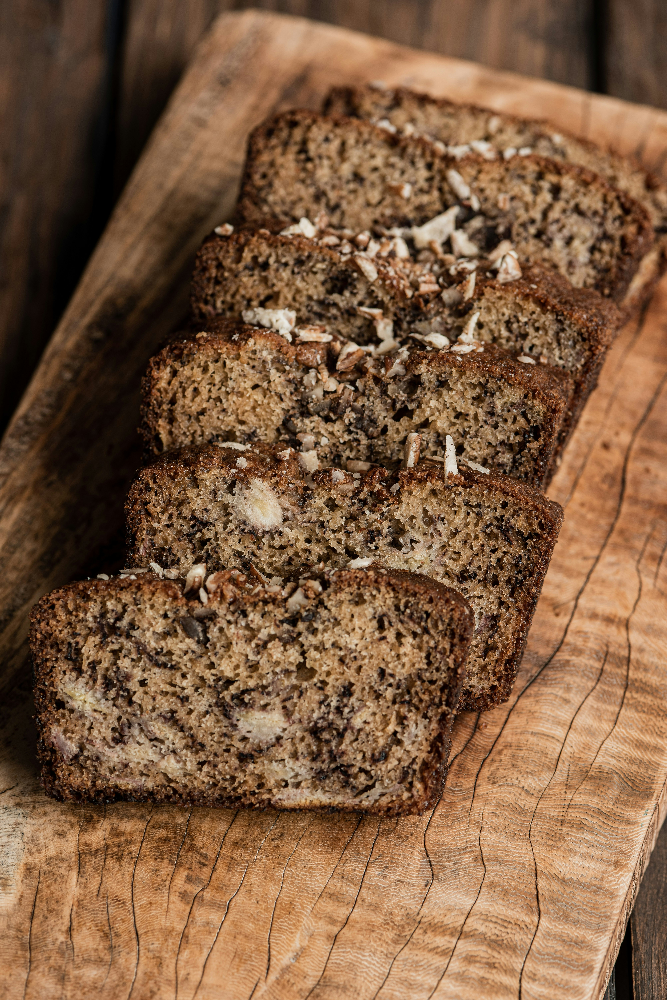

Classic Banana Bread
Home

Description
This banana bread is moist, tender, and full of sweet banana flavor, with
a lightly crisp, golden crust. Very ripe bananas are the secret: the
darker the peels, the sweeter and more flavorful the loaf.
It comes together in one bowl with no mixer needed, making it a perfect
way to use up overripe fruit. Walnuts or chocolate chips are optional, but
both are great additions. Let the loaf cool before slicing for the
cleanest pieces. Makes one 9x5-inch loaf, about 10 slices.
Ingredients
- 3 very ripe bananas, mashed (about 1½ cups)
- ½ cup unsalted butter, melted
- ¾ cup granulated sugar
- 1 large egg, room temperature
- 2 teaspoons vanilla extract
- 1 teaspoon baking soda
- ¼ teaspoon salt
- 1 teaspoon ground cinnamon
- 1½ cups all-purpose flour
- ½ cup chopped walnuts or chocolate chips (optional)
Steps
-
Preheat the oven to 350°F (175°C). Grease a 9x5-inch loaf pan, or line
it with parchment paper with an overhang for easy removal.
-
In a large bowl, mash the bananas with a fork until mostly smooth with a
few small lumps remaining.
- Stir the melted butter into the mashed bananas.
- Mix in the sugar, egg, and vanilla extract until well combined.
-
Sprinkle the baking soda, salt, and cinnamon over the mixture and stir
to incorporate.
-
Add the flour and fold gently until just combined. Do not overmix, or
the bread can turn dense.
- Fold in the walnuts or chocolate chips, if using.
- Pour the batter into the prepared pan and smooth the top.
-
Bake for 55 to 65 minutes, until a toothpick inserted into the center
comes out clean. If the top browns too quickly, tent loosely with foil
for the last 15 minutes.
-
Cool the loaf in the pan for 10 minutes, then transfer to a wire rack to
cool completely before slicing.